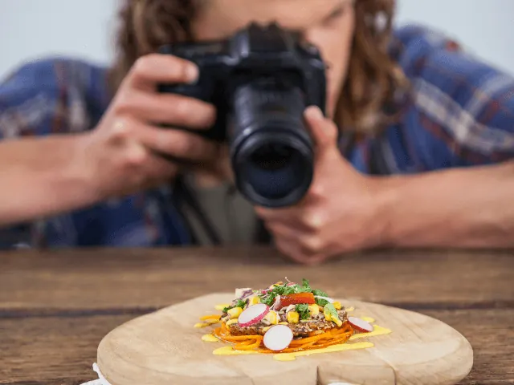

Fotografen Nijmegen: Emotie vangen, momenten vieren!
Gepubliceerd op 10 mei 2023, bijgewerkt op 26 mei 2025
Onderdeel van de gids Fotografie in Nijmegen

Fotografen zijn verhalenvertellers, die jouw meest dierbare momenten kunnen vastleggen, waardoor ze nooit meer vergeten zullen worden. Er zijn veel verschillende fotografen, zo ook in Nijmegen. Van portretfotografen die de ziel van hun onderwerp willen vastleggen tot bruidsfotografen die elke glimlach en traan willen vangen op camera. Het is een wereld van emotie, passie en techniek.
We bespreken in deze blog graag aan aantal verschillende vormen van fotografie en geven je graag een aantal tips voor de perfecte fotograaf voor binnen deze stijl in Nijmegen.
Ontdek de mogelijkheden van portretfotografie in Nijmegen
Portretfotografie is een vak apart. Het gaat niet alleen om het vastleggen van het uiterlijk van de geportretteerde, maar vooral om het vastleggen van het karakter van de geportretteerde. Deze vorm van fotografie kan worden toegepast op individuele personen, maar ook op groepen.
Bij portretfotografie wordt vaak gebruik gemaakt van professionele apparatuur zoals camera’s, lenzen en verlichting, en er wordt nauwkeurig aandacht besteed aan compositie, belichting, scherpte en andere technische aspecten om de best mogelijke foto te maken. Portretfotografie wordt vaak gebruikt voor professionele doeleinden, zoals profielfoto’s voor zakelijke websites, sociale media en publiciteitsfoto’s, maar ook voor persoonlijke herinneringen, zoals familieportretten en babyfoto’s.
Tip: zoek je een goede portretfotograaf in Nijmegen? Denk dan eens aan: Joppe, hij neemt de tijd om de mensen te leren kennen, zodat het verhaal vanzelf komt. Voor beiden een mooi en natuurlijk moment, dat is wat hij ambieert.
Zwangerschapsshoots in Nijmegen: Het perfecte cadeau voor een aanstaande moeder
Zwangerschapsshoots zijn het perfecte cadeau voor een aanstaande moeder. Het is een manier om haar te laten weten dat je aan haar denkt en dat je haar bewondert voor het creëren van nieuw leven. En dat mag wel even extra benadrukt worden.
Bovendien geeft het haar de kans om te ontspannen en te genieten van een moment voor zichzelf, terwijl ze tegelijkertijd een blijvende herinnering creëert. En uiteraard ook voor de vader, want die mag er (eventueel) ook op.

Van cake tot glimlach: Cake Smash fotoshoots in Nijmegen
Stiekem toch de fotoshoot voor jong en oud. Hoe leuk is het om die kleine te zien spelen, kliederen en smullen van die prachtige gedecoreerde taart? En met een beetje mazzel is er niet te veel in gesmasht en kun je er nog lekker van genieten. De fotograaf zal het hele proces vastleggen, van het moment waarop de taart wordt aangesneden tot het moment waarop uw kleintje helemaal onder de taart zit en de glimlach niet meer van zijn of haar gezicht af te krijgen is. Het resultaat zijn prachtige, levendige en kleurrijke foto’s die u voor altijd zult koesteren.
Tip: Raoul van Meel, heeft niet alleen een passende achternaam, maar maakt ook de meest smakelijke foto’s. Die geweldig zijn om te gebruiken voor de uitnodiging van de 1ste verjaardag van jouw kleintje.
Van de eerste blik tot de laatste dans: Bruidsfotografie in Nijmegen
Op je trouwdag wil je dat elk moment, elke blik en elke lach wordt vastgelegd zodat je deze herinneringen voor altijd kunt koesteren. Bruidsfotografie is daarom een essentieel onderdeel van jouw grote dag. Van de eerste blik tot de laatste dans, elke emotie en elk detail moet worden vastgelegd om de herinneringen te versterken.
In Nijmegen zijn er tal van professionele bruidsfotografen die begrijpen dat elke bruiloft uniek is. Van de locatie tot de kleuren en de stijl, elke bruiloft heeft zijn eigen persoonlijkheid en verhaal.
Tip: Laat deze bijzondere dag vastleggen door: Robert van Grinsven. Een kleurrijke fotograaf, verzorgd tot in de puntjes met een vleugje romantiek. Om bij weg te zweven.
Familieshoot in Nijmegen: Een moment om te verbinden en te vieren
Een familieshoot kan van alles zijn, van een spontane fotosessie in het park tot een meer gestileerde shoot in een studio. Een familieshoot is in elk geval een prachtige manier om de band tussen familieleden te versterken en mooie herinneringen te creëren die een leven lang meegaan. De fotograaf zal jullie helpen bij het kiezen van de juiste locatie en het creëren van een sfeer die bij jullie past. En natuurlijk bij het kiezen van de juiste poses en houdingen om ervoor te zorgen dat iedereen er op zijn best uitziet.
Tip: Fleur Janssen is een echte familiefotografe, ze houdt ervan om mensen en liefde vast te leggen, en waar kan dat beter dan bij een familieshoot. Kies voor vrolijke, kleurrijke, warme beelden waar de liefde vanaf spat! Kies voor Fleur.
Geniet van jullie shoot, welke het ook wordt in Nijmegen! Wij zijn benieuwd naar de foto’s.
Conclusie
Fotografen in Nijmegen hebben het unieke vermogen om belangrijke levensmomenten vast te leggen, van zwangerschapsshoots en familieshoots tot bruidsfotografie. Deze stad biedt een overvloed aan getalenteerde fotografen, elk met hun eigen stijl en specialiteit. Of je nu op zoek bent naar een portretfotograaf die de essentie van je persoonlijkheid vastlegt, of een bruidsfotograaf die alle emoties van je trouwdag vereeuwigt, Nijmegen heeft het allemaal. Naast het kiezen van de perfecte fotograaf, biedt winkelen in Nijmegen ook een scala aan mogelijkheden voor het vinden van de ideale outfits en accessoires voor je fotoshoot. Of het nu gaat om een casual outfit voor een familiefotosessie of een prachtige bruidsjurk, in Nijmegen vind je het allemaal. Hiermee wordt niet alleen de shoot zelf een herinnering, maar ook de voorbereiding ervan een bijzondere ervaring.
DE ULTIEME TROUWGIDS VIND JE HIER
Fotografen en videografen in Nijmegen
Zin om te beginnen? In onze bedrijvengids vind je alle 58 fotografen in Nijmegen, met openingstijden, kenmerken en een kaart.
Bekijk alle 58 fotografen in Nijmegen
Heb je zelf een fotograaf? Laat je hier uitlichten.